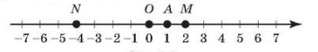

Координатная прямая — это прямая с указанными на ней началом отсчета (точка O), направлением отсчета (указано стрелкой) и единичным отрезком (OA = 1).
Числа, расположенные на координатной прямой справа от нуля, называют положительными, а слева — отрицательными. Число нуль не является ни положительным, ни отрицательным.

Точка А изображает число 1, которое называют координатой точки А и записывают: А(1). Аналогично записывают: O(0); М(2); N(-4).
Два числа, отличающиеся друг от друга только знаком, называются противоположными числами.
Например, 1 и -1, 2 и 2, 7 и -7 — противоположные числа.
На координатной прямой противоположные числа расположены симметрично относительно начала отсчета.
Числа натуральные, им противоположные, а также число нуль составляют множество целых чисел. Оно обозначается Z.
Например, 5 ∈ Z (число пять принадлежит множеству целых чисел), -7 ∈ Z, -3 ∉ Z (число -3 не является целым числом).
Каждому целому числу можно поставить в соответствие единственную точку на координатной прямой.
Иногда натуральные числа называют целыми положительными, а числа —1, -2, -3, ... — целыми отрицательными.
Модулем числа а называют расстояние от начала отсчета до точки, которая изображает это число на координатной прямой.
|-4| = 4; 4 = 4; |0| = 0.
Модуль положительного числа равен самому числу, модуль отрицательного числа равен числу, противоположному данному: |a| = |-a|.
Число, которое можно записать в виде отношения р=, где a — целое число, а n — натуральное, называют рациональным числом.
Например, числа 0,27; 3; -3,5; 10; -3; 0 являются рациональными, поскольку 0,27 = ; 3 = ; -3,5 = ; 10 = ; -3 = ; 0 =
Рациональные числа включают в себя целые и дробные числа.
Множество рациональных чисел обозначают Q.
На множестве Q можно производить действия сложения, вычитания, умножения и деления (кроме деления на 0). Каждому рациональному числу можно поставить в соответствие единственную точку на координатной прямой.
Из двух рациональных чисел больше то число, которое на координатной прямой расположено правее. Следовательно:
а) всякое положительное число больше нуля и больше любого отрицательного:
-10 < 1; 0 < 1; 5 > -5000;
б) всякое отрицательное число меньше нуля:
-7 < 0; -0,1 < 0; 0 > -1 000;
в) из двух отрицательных чисел больше то число, модуль которого меньше: -3 > -5, т.к. |-3| < |-5|
1. При сложении рациональных чисел с одинаковыми знаками нужно сложить их модули и перед суммой поставить их общий знак.
2. При сложении двух рациональных чисел с разными знаками модуль суммы равен разности модулей слагаемых. Знак суммы совпадает со знаком слагаемого, имеющего больший модуль.
3. Сумма противоположных чисел равна нулю.
4. Чтобы вычесть из числа a число b, достаточно к уменьшаемому прибавить число, противоположное вычитаемому: a - b = a + (-b).
Для любых рациональных чисел a, b и c выполняются равенства:
1) переместительное свойство: a + b = b + a
2) сочетательное свойство: (a + b) + c = a + (b + c)
1. Произведение (частное) чисел одного знака есть число положительное.
2. Произведение (частное) двух чисел с разными знаками есть число отрицательное.
Для любых рациональных чисел а, b и с справедливы равенства:
1) действия с нулем и единицей: а ⋅ 1 = 1 ⋅ a = a; a ⋅ (-1) = -а; а ⋅ 0 = 0 ⋅ а = 0; (-1) ⋅ а = -а;
2) переместительное свойство: a ⋅ b = b ⋅ a
сочетательное свойство: (ab) ⋅ c = a ⋅ (bc);
3) распределительное свойство: a(b + c) = ab + ас;
a : 1 = a; a : (-1) = -a; a : a = 1; a : (-a) = -1; 0 : a = 0; делить на нуль нельзя
an = и a-n =
a0 = 1, если a ≠ 0
00 и 0-n, где n ∈ N — не определено
Стандартным видом числа называется его запись в виде а ⋅ 10n, где 1 ≤ a ≤10, n - целое число. Число n называют порядком числа.
Числовое выражение — это математическая запись, содержащая числа, скобки и знаки действий.
Значением числового выражения называется число, которое получается в результате выполнения действия. Каждое числовое выражение имеет единственное значение или не имеет его совсем.
Выражения, содержащие деление на нуль, не имеют значения, поскольку это действие невозможно выполнить. О таком выражении говорят, что оно не имеет смысла.
Для того чтобы найти значение выражения, необходимо соблюдать порядок действий.
Действия первой ступени — сложение и вычитание; действия второй ступени — умножение и деление; действие третьей ступени — возведение в степень.
1. Если выражение содержит скобки, то сначала выполняются действия в скобках. Если внутри скобок содержатся другие скобки, то сначала выполняются действия во внутренних скобках.
2. Сначала выполняются действия высшей ступени, затем низшей.
3. Действия одной и той же степени выполняются в том порядке, в котором они стоят в выражении.
1. Если перед скобками стоит знак «+», то, раскрывая скобки, можно:
а) опустить скобки и знак «+»;
б) записать слагаемые, стоящие в скобках, сохранив их знаки;
в) если первое слагаемое, стоящее в скобках, записано без знака, то его нужно записать со знаком «+».
2. Если перед скобками стоит знак «-», то, раскрывая скобки, можно:
а) опустить скобки и знак «-»;
б) записать слагаемые, стоящие в скобках, поменяв знаки всех слагаемых на противоположные;
в) если первое слагаемое, стоящее в скобках, записано без знака, то его нужно записать со знаком «-».